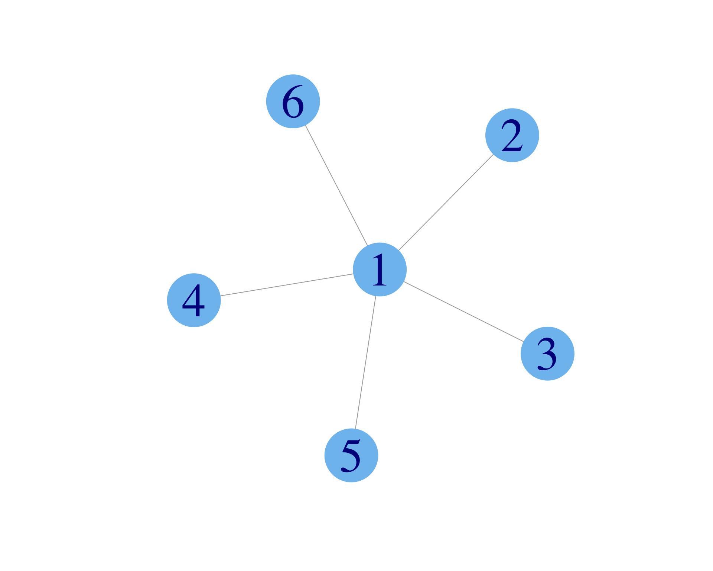

Introduction to EBS 181/281: Computational Social Science for Sustainability
Social interactions, social outcomes, and social learning in social networks
2025-01-06
Sustainability

New Oxford American Dictionary definition
Sustainability

UN Sustainable Development Goals: https://sdgs.un.org/goals
Sustainability

A sustainability project at Amazon [link]
Sustainability

Another sustainability project at Amazon [link]
Social Science for Sustainability
Ostrom’s work elevated traditional, Indigenous adaptations for a changing climate (always been changing) and other sustainability challenges.
The Influencer
Let’s model how long it will take for everyone who is influenced by this influencer to adopt the behavior of commuting on bike!

Yours truly spreading the love of biking.
The influencer
Initialization: time step \(t=0\); B: biker, N: not biker
- A vertice (dots) represents a person with a unique id
- An edge (arrows) represents a relationship between two people
- Edge arrows indicate the direction of information flow
- Two simulated people interact if and only if an edge connects them
The influencer
Time step \(t = T\)

- In this model, everyone eventually bikes because there is no “forgetting” or “reverting” to previous behaviors.
- The state where all become bikers is called fixation.
- The time step \(T\) when fixation occurs is the fixation time.
- With this model we can calculate \(T\) as a function of the number of influenced agents, \(N\), and the transmissibility of biking, \(\tau\).
Social Science for Sustainability
Select design principles (8 total; see Cox, Arnold, and Tomás (2010) reading for an overview):